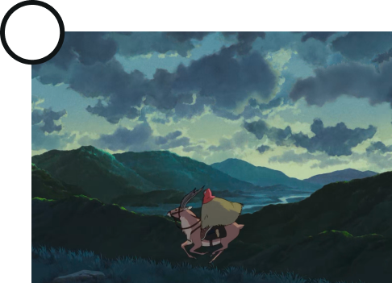
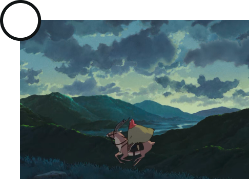
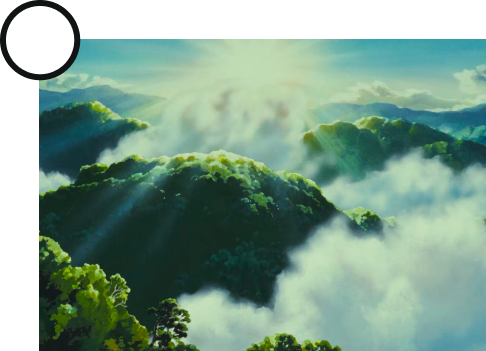
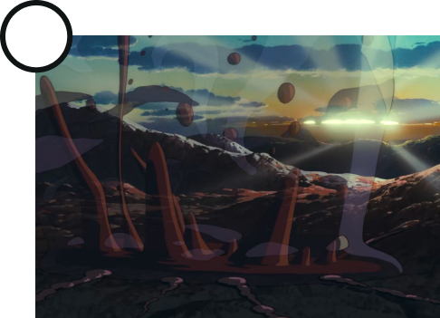
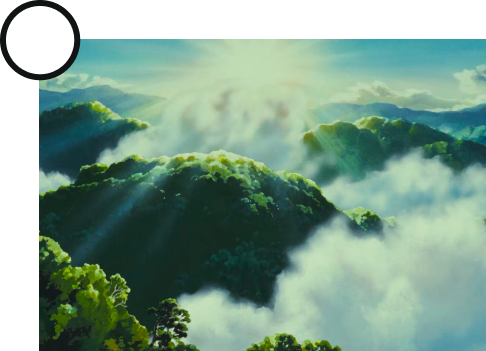
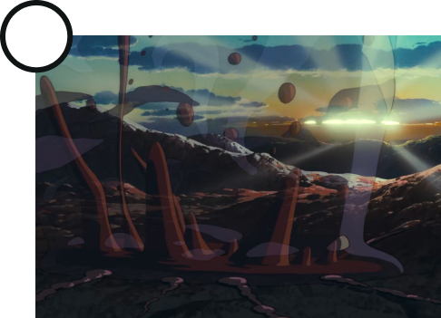
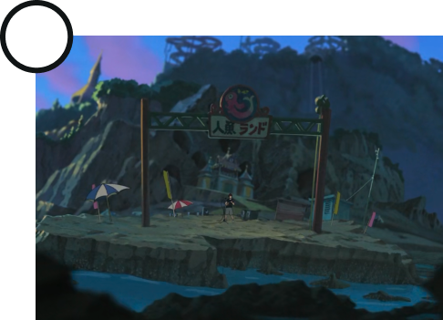
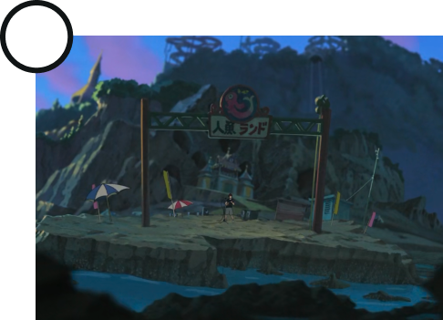
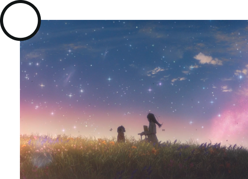
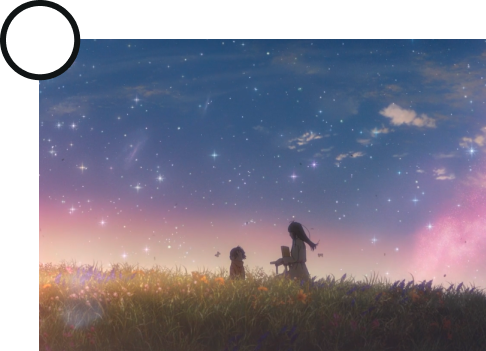

HINODE
Sunrise as end of the power of evil spirits
Hinode, the break of dawn, signals the end of the power of evil spirits over the waking world. The holy light of the sun banishes yōkai, ghosts, and demons back to the places from which they came. In Japanese artwork, the sun often appears as the final scene in picture scrolls depicting yōkai and the night parade of one hundred demons. Similarly, Toriyama Sekien’s second illustrated yōkai encyclopedia, Konjaku gazu zoku hyakki, opens with ōmagatoki and closes with hinode, depicting the monsters that rule the world from dusk until dawn.
Text from yokai.com/hinode

Utagawa Hiroshige, Shinagawa: Sunrise, 1834
 Implicit reference
Implicit reference
 Explicit reference
Explicit reference
Throughout all anime, it's common that sunrise happens when the main conflicts and battles are over. Its appareance is similar to the natural phenomenon, without particular change. That's why it's hard to say if the content is explicit.


 

 





 


 
